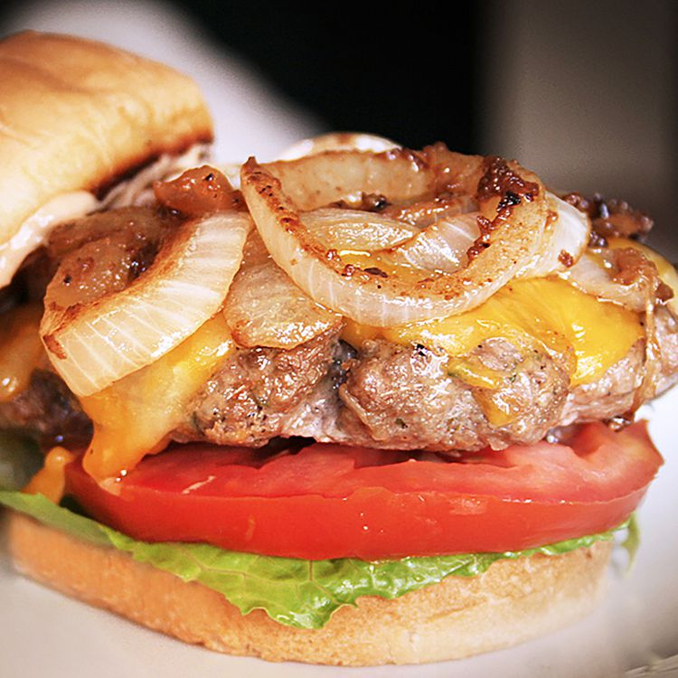

The 'best' hamburger

Ah the hamburger, a dish which needs little introduction. The recipe below is from
Allrecipes, and it describes it as the 'best' hamburger. There is certainly more
to it than a basic hamburger but as for the best, well that is a matter for you to decide.
One more thing to note is that the recipe as provided by Allrecipes, in addition to calling for salt,
contained many salty ingredients. I have taken the liberty of removing salt from the ingredients list.
I have also switch from soy sauce to Tamari sauce to remove gluten from the recipe. However, if you can tolerate
gluten you may prefer soy sauce instead. I believe there will be enough salt in the recipe
even with these changes and probably too much (for taste nevermind health) without them.
Ingredients
- 1 ½ pounds lean ground beef
- ½ onion, finely chopped
- ½ cup shredded Colby Jack or Cheddar cheese
- 1 egg
- 1 (1 ounce) envelope dry onion soup mix
- 1 clove garlic, minced
- 1 tablespoon garlic powder
- 1 teaspoon soy sauce
- 1 teaspoon Worcestershire sauce
- 1 teaspoon dried parsley
- 1 teaspoon dried basil
- 1 teaspoon dried oregano
- ½ teaspoon crushed dried rosemary
- pepper to taste>
Steps
- Preheat an outdoor grill for high heat and lightly oil the grate.
- Meanwhile, combine ground beef, onion, cheese, egg, onion soup mix, minced garlic,
garlic powder, soy sauce, Worcestershire sauce, parsley, basil, oregano, rosemary, salt,
and pepper in a large bowl. Use your hands to form the mixture into 4 patties.
- Cook patties on the preheated grill until no longer pink in the center and the juices run clear,
about 4 to 5 minutes per side. An instant-read thermometer inserted into the center should read
at least 165 degrees F (74 degrees C).